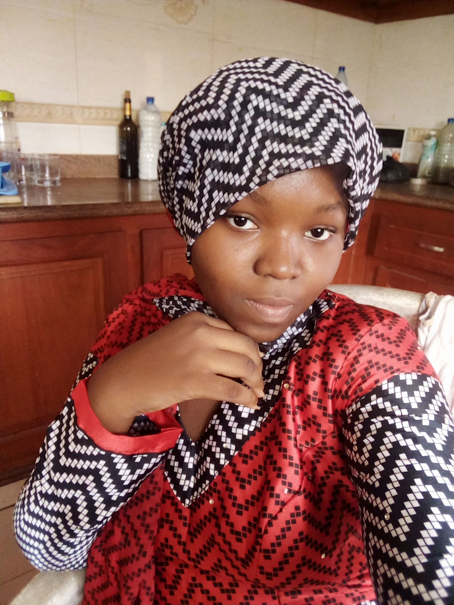

Projets de KIKI Esther

Depuis toute petite, j'ai toujours été une grande passionnée de pâtisserie. Mon rêve le plus chère donc, est d'avoir une pâtisserie à mon nom. J'envisage d'apprendre et de maîtriser le developpement web afin de m'en servir pour améliorer la visibilité de ma future entreprise.
Projets de MONTCHO Marcolin

Etant un grand pasionné de l'informatique en générale, mais surtout de la programmation, des réseaux et de l'intélligence artificielle, j'envisage, en premier lieu, approfondir mes connaissances dans ces différents domaines, puis ensuite, user de mes acquis pour participer au développement technologique de mon pays.